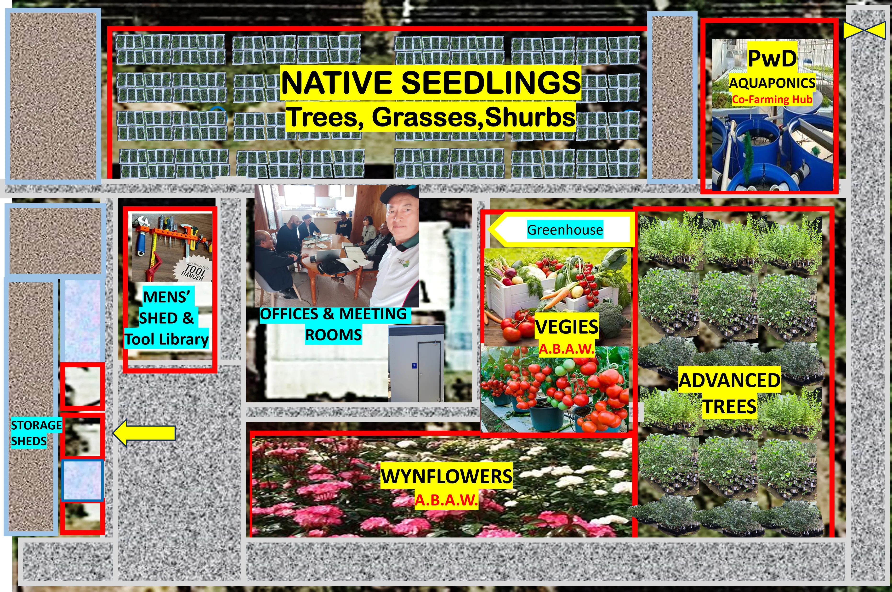
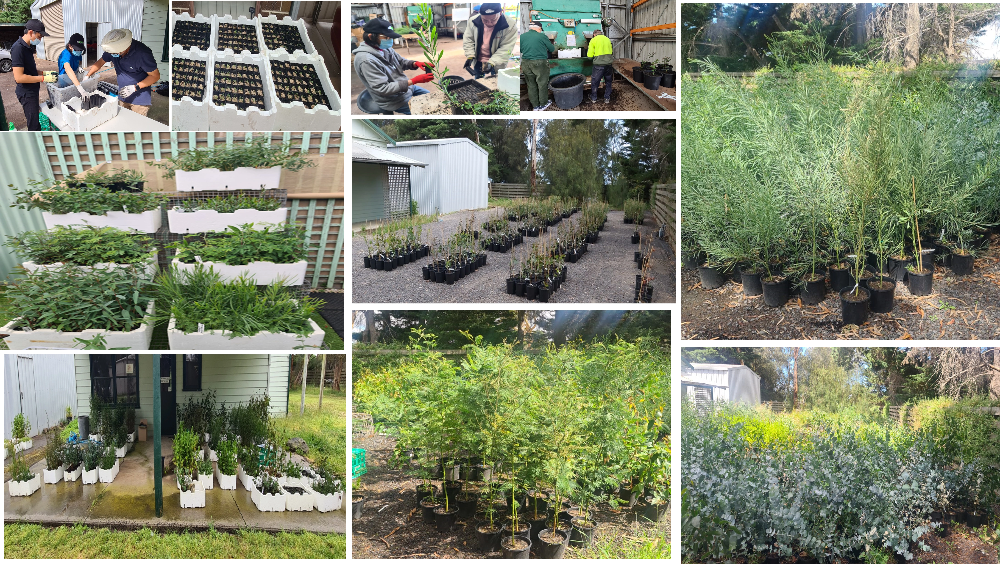
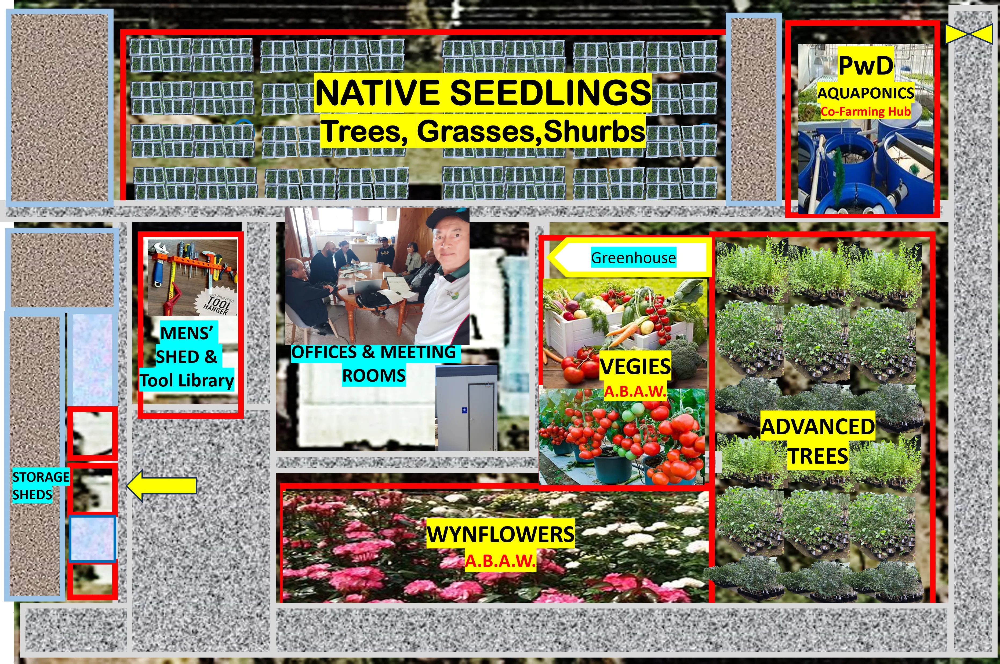
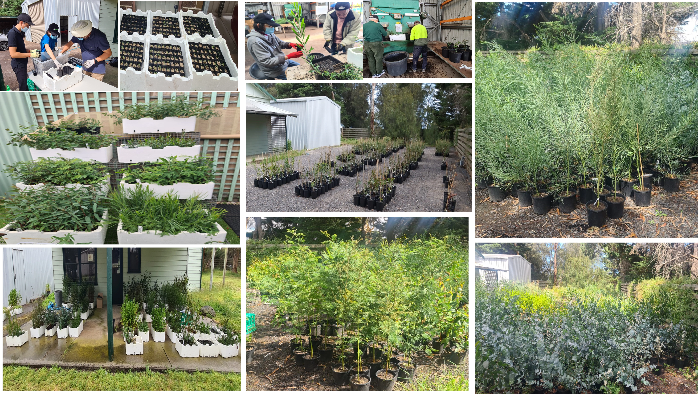
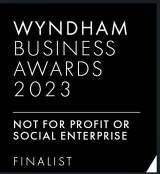

Our Mission
To provide digital-franchise platform creating low-barrier business opportunities for people facing employment barriers—backed by structured training, tools and eco-values.
Our Vision
To be the leading platform for co-farming initiatives that promote environmental sustainability, social inclusion, and economic resilience. We envision a future where there is a nationwide network of green micro-franchisees driving social and environmental impact.
Why Us?
Expertise
Years of experience in agricultural business and collaboration.
Low Entry Costs
simple fees, no hidden charges.
Scalable Impact
built-in carbon tracking & growth pathways.
Inclusivity
Creating opportunities for everyone, including people with disabilities.
Full Support
training, mentorship & community.
We provide this eco-franchise platform to empower NDIS participants and others facing employment barriers to achieve economic independence and drive positive environmental change through accessible training, low start-up fees, and ongoing mentorship.
Our Team

Raymond Loh
Founder
Raymond Loh leads Co-Farming Hub with a vision for sustainable agriculture and innovation.
LinkedInEden Lee
CEO
Eden Lee, young CEO of Co Farming Hub, dedicated to driving sustainable agriculture and inclusive community collaboration across Australia and the Asia-Pacific.
LinkedIn
Ash Conner
C-OO
Ash Conner is our Cheif Operation Officer, a results-focused customer-oriented professional with 10 years of leadership experience. Expertise in communication, collaboration, stakeholder relations, and delivering successful project outcomes.
LinkedIn
Kevin Chew
Global Strategic Partner/ Advisor
Kevin Chew is a valued partner and advisor of Co-Farming Hub and a lifetime financial member of Australian Council of Multicultural Entrepreneurs (ACME)

Tim Langdon
Partner
Tim Langdon is a valued partner of Co-Farming Hub and the publisher of the acclaimed sustainability newsletter, 'Eco Voice.'
LinkedIn
Walter Villagonzalo
Partner
Walter Villagonzalo is a valued partner with extensive experience as a President in the international trade and development industry.
LinkedIn
Datuk Micheal Kang
Strategic Partner/Advisor
Datuk Micheal Kang, a strategic partner, is the National President of the SME Association of Malaysia.
LinkedInDr. John Vong
Strategic Partner/Advisor
Dr. John Vong, a strategic partner and advisor, formerly worked with Climateworks to mobilize capital towards achieving net zero and Paris-aligned objectives.
LinkedIn
Dr. Billy Tang
Strategic Partner/Advisor
Dr. Billy Tang, a strategic partner and advisor, is the founder and core researcher of PWD Smartfarmability.
LinkedIn
Dr. Noli Sicad
Strategic Partner/Advisor
Dr. Noli Sicad, a strategic partner and advisor, is a respected specialist in carbon credits.
LinkedIn
Greg Fendis
Strategic Partner/Advisor
Greg Fendis, a strategic partner and advisor, is a senior business executive specializing in global business development and thrives in dynamic organizations.
LinkedInGroup Photos
WynTree Nursery
Co-Farming Hub operates from the WynTree Nursery located in Point Cook, VIC 3030. This location serves as the physical hub for our innovative projects and community collaborations.
 



Awards & Recognition
- 2023: WYNDHAM business award 
-
2021: Gov Hack Australia

-
2021: Forest Carbon Analytics & Carbon Trading

Road Map
Contact Us
We'd love to hear from you. Reach out to us for any inquiries or collaborations.
Contact Us